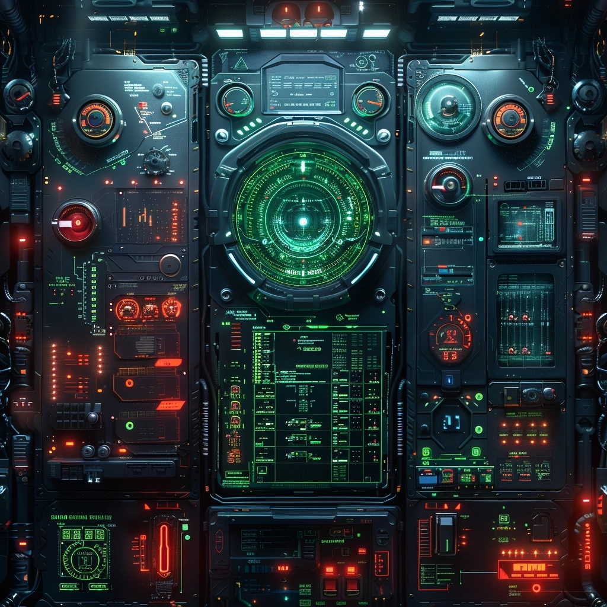

<!DOCTYPE html>
<html lang="en" data-bs-theme="dark">
  <head>
    <meta charset="utf-8" />
    <meta name="viewport" content="width=device-width, initial-scale=1" />
    <title>Color Picker</title>
    <link href="https://cdn.jsdelivr.net/npm/bootstrap@5.3.3/dist/css/bootstrap.min.css" rel="stylesheet" integrity="sha384-QWTKZyjpPEjISv5WaRU9OFeRpok6YctnYmDr5pNlyT2bRjXh0JMhjY6hW+ALEwIH" crossorigin="anonymous">
    <style>
    html {
      background: black;
    }
    body {
      padding: 0;
      margin: 0;
      overflow: hidden;
    }
    </style>

  </head>
  <body class="">

    <canvas id="canvas" class="w-100" data-src="./color.jpg"></canvas>

    <!--  -->

      <script>


      function RGBAToHSLA(rgba) {
        let sep = rgba.indexOf(",") > -1 ? "," : " ";
        rgba = rgba.substr(5).split(")")[0].split(sep);

        // Strip the slash if using space-separated syntax
        if (rgba.indexOf("/") > -1)
          rgba.splice(3,1);

        for (let R in rgba) {
          let r = rgba[R];
          if (r.indexOf("%") > -1) {
            let p = r.substr(0,r.length - 1) / 100;

            if (R < 3) {
              rgba[R] = Math.round(p * 255);
            } else {
              rgba[R] = p;
            }
          }
        }

        // Make r, g, and b fractions of 1
        let r = rgba[0] / 255,
            g = rgba[1] / 255,
            b = rgba[2] / 255,
            a = rgba[3];


        // Find greatest and smallest channel values
        let cmin = Math.min(r,g,b),
            cmax = Math.max(r,g,b),
            delta = cmax - cmin,
            h = 0,
            s = 0,
            l = 0;


        // Calculate hue
// No difference
if (delta == 0)
  h = 0;
// Red is max
else if (cmax == r)
  h = ((g - b) / delta) % 6;
// Green is max
else if (cmax == g)
  h = (b - r) / delta + 2;
// Blue is max
else
  h = (r - g) / delta + 4;

h = Math.round(h * 60);

// Make negative hues positive behind 360°
if (h < 0)
    h += 360;


        // Calculate lightness
        l = (cmax + cmin) / 2;

        // Calculate saturation
        s = delta == 0 ? 0 : delta / (1 - Math.abs(2 * l - 1));

        // Multiply l and s by 100
        s = +(s * 100).toFixed(1);
        l = +(l * 100).toFixed(1);


  return "hsl(" + parseInt(h) + ", " + parseInt(s) + "%, " +parseInt(l) + "%)";
  // return "hsla(" + h + "," + s + "%," +l + "%," + a + ")";
}


// code from https://ourcodeworld.com/articles/read/185/how-to-get-the-pixel-color-from-a-canvas-on-click-or-mouse-event-with-javascript

function drawImageFromWebUrl(canvas, sourceurl){
  const img = new Image();
  img.addEventListener("load", function () {
    // The image can be drawn from any source

    // const {width, height} = calculateAspectRatioFit(img.width, img.height, window.innerWidth, window.innerHeight);
    // const {width, height} = calculateAspectRatioFit( window.innerWidth, window.innerHeight, img.width, img.height);

    canvas.width = img.width;
    canvas.height = img.height;

    // canvas.width= window.innerWidth;
    // canvas.height=window.innerHeight;
    // canvas.width=img.width;
    // canvas.height=img.height;

    canvas.getContext("2d").drawImage(img, 0, 0, img.width, img.height, 0, 0, canvas.width, canvas.height);
  });
  img.setAttribute("src", sourceurl);
}

const canvas = document.getElementById("canvas");

canvas.addEventListener("contextmenu",function(e){e.preventDefault(); return false})

canvas.addEventListener("mousedown",function(e){
	  var eventLocation = getEventLocation(this, e);
    var context = this.getContext('2d');
    var data = context.getImageData(eventLocation.x, eventLocation.y, 1, 1).data;

    var position = [eventLocation.x, eventLocation.y, window.innerWidth, window.innerHeight];
    let color = [data[0], data[1], data[2], data[3]];

    parent.postMessage({ name:'color'+e.button, data:{position, color} });

},false);

drawImageFromWebUrl(canvas, canvas.dataset.src);


function getElementPosition(obj) {
    var curleft = 0, curtop = 0;

    if (obj.offsetParent) {
        do {
            curleft += obj.offsetLeft;
            curtop += obj.offsetTop;
        } while (obj = obj.offsetParent);
        return { x: curleft, y: curtop };
    }

    return undefined;
}

//https://stackoverflow.com/questions/3971841/how-to-resize-images-proportionally-keeping-the-aspect-ratio
function calculateAspectRatioFit(srcWidth, srcHeight, maxWidth, maxHeight) {

    var ratio = Math.min(maxWidth / srcWidth, maxHeight / srcHeight);

    return { width: srcWidth*ratio, height: srcHeight*ratio };
 }

function getEventLocation(element, event){
		var pos = getElementPosition(element);

    const actualWidth = element.getBoundingClientRect().width;
    const actualWeight = element.getBoundingClientRect().height;

    var ratio = Math.min(actualWidth / element.width, actualWeight / element.height);

    let x = event.pageX/ratio;
    let y = event.pageY/ratio;

    // element.getContext('2d').fillRect(x, y, 10, 10);

    return {
    		x ,
      	y
    };

}


      </script>

  </body>
</html>
